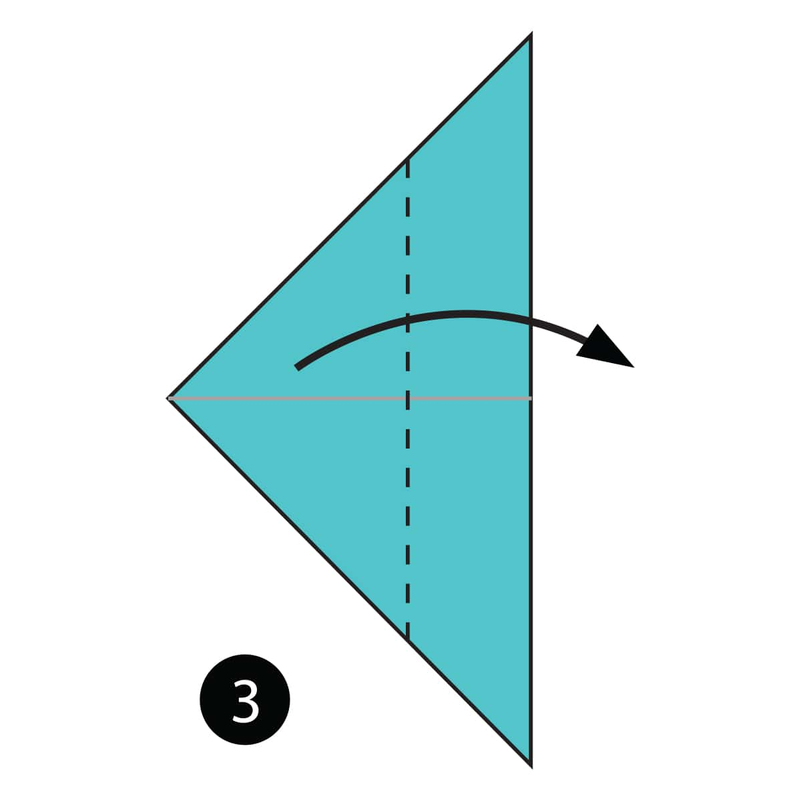

Fold the paper in half and then unfold it.

Fold the paper in half the other way.

Fold both layers of paper to the right along the dotted line.

Fold the top layer of paper to the left along the dotted line.

Fold the model in half down along the dotted line.

Fold the top flap of paper up along the dotted line and then repeat on the other side.

Fold the paper along the dotted line and then unfold it.